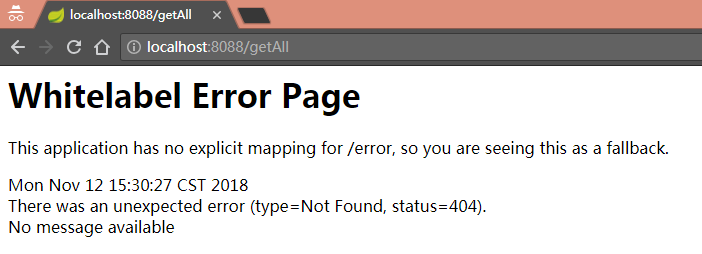
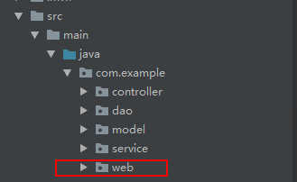
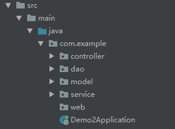

Spring Boot:Whitelabel Error Page错误解决
xeh的学习笔记
将记录当成一种习惯
首页
归档
{title}
{date}
{tags}
Spring Boot:Whitelabel Error Page错误解决
Nov 12, 2018
点击
使用Spring Boot 构建一个简单的工程，访问报错如下：

404，找了很久，路径没错，注解也没错，毫无头绪。最后只能求助于百度了，终于知道问题出在哪里了。
原因：
程序只加载启动类所在包及其子包下的内容。我不小心包启动类放在了web包下，导致dao其他包的代码加载不到。


目录结构图
解决方法：
1.在Application类中加上
@ComponentScan(basePackages = {"com.example.controller"})
多个之间用”,”分隔。
2.将启动类放在正确位置。
分享到：
markdown入门
文章目录
使用Spring Boot 构建一个简单的工程，访问报错如下：
404，找了很久，路径没错，注解也没错，毫无头绪。最后只能求助于百度了，终于知道问题出在哪里了。
原因：
程序只加载启动类所在包及其子包下的内容。我不小心包启动类放在了web包下，导致dao其他包的代码加载不到。
解决方法：
1.在Application类中加上
@ComponentScan(basePackages = {"com.example.controller"})
多个之间用”,”分隔。
2.将启动类放在正确位置。
最新文章
Spring Boot:Whitelabel Error Page错误解决
markdown入门
Hello World
标签
归档
十一月 2018
十月 2018
友情链接
博客园新闻
开发者头条
v2ex